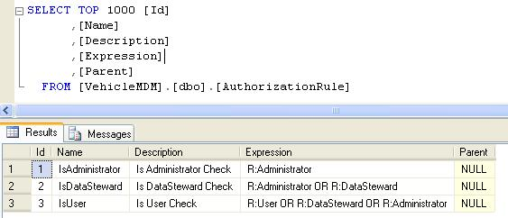
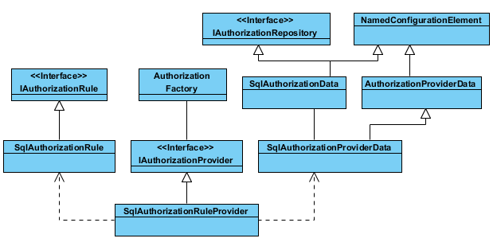

Extending the Security Application Block - SqlAuthorizationRuleProvider
Introduction
In current enterprise library security application block, all the rules are saved in the configuration file - web.config or app.config. In production environment, system requires to load the rules from the repositories instead and allow to modify the rules at run time. Below article explains how to extend the block and read the rules from Sql Server database.
Building the Sample
To run the sample codes, VS2010 is needed.
Description
First, let's create some rule table into the database--AuthorizationRule and insert 3 rules into the table.

DB Script ( ( Please change the DB name as required)) to create the table and sample rules
USE [VehicleMDM]
GO
/****** Object: Table [dbo].[AuthorizationRule] Script Date: 03/20/2012 11:34:41 ******/
IF EXISTS (SELECT * FROM sys.objects WHERE object_id = OBJECT_ID(N'[dbo].[AuthorizationRule]') AND type in (N'U'))
DROP TABLE [dbo].[AuthorizationRule]
GO
USE [VehicleMDM]
GO
/****** Object: Table [dbo].[AuthorizationRule] Script Date: 03/20/2012 11:34:41 ******/
SET ANSI_NULLS ON
GO
SET QUOTED_IDENTIFIER ON
GO
CREATE TABLE [dbo].[AuthorizationRule](
[Id] [int] IDENTITY(1,1) NOT NULL,
[Name] [nvarchar](50) NULL,
[Description] [nvarchar](200) NULL,
[Expression] [nvarchar](100) NULL,
[Parent] [int] NULL,
CONSTRAINT [PK_AuthorizationRule] PRIMARY KEY CLUSTERED
(
[Id] ASC
)WITH (PAD_INDEX = OFF, STATISTICS_NORECOMPUTE = OFF, IGNORE_DUP_KEY = OFF, ALLOW_ROW_LOCKS = ON, ALLOW_PAGE_LOCKS = ON) ON [PRIMARY]
) ON [PRIMARY]
GO
INSERT INTO [AuthorizationRule]
([Name]
,[Description]
,[Expression]
,[Parent])
VALUES
('IsAdministrator','Is Administrator Check','R:Administrator',null)
INSERT INTO [AuthorizationRule]
([Name]
,[Description]
,[Expression]
,[Parent])
VALUES
('IsDataSteward','Is DataSteward Check','R:Administrator OR R:DataSteward',null)
INSERT INTO [AuthorizationRule]
([Name]
,[Description]
,[Expression]
,[Parent])
VALUES
('IsUser','Is User Check','R:User OR R:DataSteward OR R:Administrator',null)
GO
USE [VehicleMDM] GO /****** Object: Table [dbo].[AuthorizationRule] Script Date: 03/20/2012 11:34:41 ******/ IF EXISTS (SELECT * FROM sys.objects WHERE object_id = OBJECT_ID(N'[dbo].[AuthorizationRule]') AND type in (N'U')) DROP TABLE [dbo].[AuthorizationRule] GO USE [VehicleMDM] GO /****** Object: Table [dbo].[AuthorizationRule] Script Date: 03/20/2012 11:34:41 ******/ SET ANSI_NULLS ON GO SET QUOTED_IDENTIFIER ON GO CREATE TABLE [dbo].[AuthorizationRule]( [Id] [int] IDENTITY(1,1) NOT NULL, [Name] [nvarchar](50) NULL, [Description] [nvarchar](200) NULL, [Expression] [nvarchar](100) NULL, [Parent] [int] NULL, CONSTRAINT [PK_AuthorizationRule] PRIMARY KEY CLUSTERED ( [Id] ASC )WITH (PAD_INDEX = OFF, STATISTICS_NORECOMPUTE = OFF, IGNORE_DUP_KEY = OFF, ALLOW_ROW_LOCKS = ON, ALLOW_PAGE_LOCKS = ON) ON [PRIMARY] ) ON [PRIMARY] GO INSERT INTO [AuthorizationRule] ([Name] ,[Description] ,[Expression] ,[Parent]) VALUES ('IsAdministrator','Is Administrator Check','R:Administrator',null) INSERT INTO [AuthorizationRule] ([Name] ,[Description] ,[Expression] ,[Parent]) VALUES ('IsDataSteward','Is DataSteward Check','R:Administrator OR R:DataSteward',null) INSERT INTO [AuthorizationRule] ([Name] ,[Description] ,[Expression] ,[Parent]) VALUES ('IsUser','Is User Check','R:User OR R:DataSteward OR R:Administrator',null) GO
Source Code Files
Class Diagram

- IAuthorizationRepository: interface for the rule repository, has attributes including Name, Connectionstring
- SqlAuthorizationData: class implements the IAuthorizationRepository interface.
- SqlAuthorizationProviderData: class overrides the method GetRegistrationsof AuthorizationProviderData class and it also holds a collection of SqlAuthorizationData instances
- IAuthorizationRule: interface which contains attributes including Name, Expression
- SqlAuthorizationRule: class implements the interface of IAuthorizationRule
- SqlAuthorizationRuleProvider: the core of the change, which extends the class of AuthorizationProvider, it reads the SqlAuthorizationProviderData, and translates into connection string and uses ADO.net to initialize a set of SqlAuthorizationRule instances.
So How to use the security application block? Here are some links
http://msdn.microsoft.com/en-us/library/ff648031.aspx
Deployment
1) change security configuration in app.config or web.config ( please correctly set the connection string, namespace..)
<securityConfiguration defaultAuthorizationInstance="RulesProvider" defaultSecurityCacheInstance="">
<authorizationProviders>
<add type="VehicleMaster.Infrastructure.Common.Utilities.Security.SqlAuthorizationRuleProvider, Utilities" name="RulesProvider">
<repositories>
<add name="default" connectionstring="Data Source=10.234.58.172\SQL_DEV;Initial Catalog=VehicleMDM;User Id=sa;Password=Passw0rd;"/>
</repositories>
</add>
</authorizationProviders>
</securityConfiguration>
<securityConfiguration defaultAuthorizationInstance="RulesProvider" defaultSecurityCacheInstance=""> <authorizationProviders> <add type="VehicleMaster.Infrastructure.Common.Utilities.Security.SqlAuthorizationRuleProvider, Utilities" name="RulesProvider"> <repositories> <add name="default" connectionstring="Data Source=10.234.58.172\SQL_DEV;Initial Catalog=VehicleMDM;User Id=sa;Password=Passw0rd;"/> </repositories> </add> </authorizationProviders> </securityConfiguration>
[RuleAuthorize("IsAdministrator")]
public ActionResult About()
{
return View();
}
[RuleAuthorize("IsAdministrator")] public ActionResult About() { return View(); }

More Information
We also used Cache application block to cache the rules. The Cache Manager configuration is shown as below.
<cachingConfiguration defaultCacheManager="CacheManager">
<cacheManagers>
<add name="CacheManager" type="Microsoft.Practices.EnterpriseLibrary.Caching.CacheManager, Microsoft.Practices.EnterpriseLibrary.Caching, Version=5.0.414.0, Culture=neutral, PublicKeyToken=31bf3856ad364e35"
expirationPollFrequencyInSeconds="60" maximumElementsInCacheBeforeScavenging="1000"
numberToRemoveWhenScavenging="10" backingStoreName="Cache" />
</cacheManagers>
<backingStores>
<add name="Cache" type="Microsoft.Practices.EnterpriseLibrary.Caching.Database.DataBackingStore, Microsoft.Practices.EnterpriseLibrary.Caching.Database, Version=5.0.414.0, Culture=neutral, PublicKeyToken=31bf3856ad364e35"
encryptionProviderName="" databaseInstanceName="CacheDB" partitionName="AuthorizationCache" />
</backingStores>
</cachingConfiguration>
<connectionStrings>
<add name="CacheDB" connectionString="Data Source=10.234.58.172\SQL_DEV;Initial Catalog=VehicleMDM;Persist Security Info=True;User ID=sa;Password=Passw0rd;MultipleActiveResultSets=True" providerName="System.Data.SqlClient" />
<add name="ApplicationServices" connectionString="Data Source=10.234.58.172\SQL_DEV;Initial Catalog=VehicleMDM;User Id=sa;Password=Passw0rd;" providerName="System.Data.SqlClient" />
</connectionStrings>
<cachingConfiguration defaultCacheManager="CacheManager"> <cacheManagers> <add name="CacheManager" type="Microsoft.Practices.EnterpriseLibrary.Caching.CacheManager, Microsoft.Practices.EnterpriseLibrary.Caching, Version=5.0.414.0, Culture=neutral, PublicKeyToken=31bf3856ad364e35" expirationPollFrequencyInSeconds="60" maximumElementsInCacheBeforeScavenging="1000" numberToRemoveWhenScavenging="10" backingStoreName="Cache" /> </cacheManagers> <backingStores> <add name="Cache" type="Microsoft.Practices.EnterpriseLibrary.Caching.Database.DataBackingStore, Microsoft.Practices.EnterpriseLibrary.Caching.Database, Version=5.0.414.0, Culture=neutral, PublicKeyToken=31bf3856ad364e35" encryptionProviderName="" databaseInstanceName="CacheDB" partitionName="AuthorizationCache" /> </backingStores> </cachingConfiguration> <connectionStrings> <add name="CacheDB" connectionString="Data Source=10.234.58.172\SQL_DEV;Initial Catalog=VehicleMDM;Persist Security Info=True;User ID=sa;Password=Passw0rd;MultipleActiveResultSets=True" providerName="System.Data.SqlClient" /> <add name="ApplicationServices" connectionString="Data Source=10.234.58.172\SQL_DEV;Initial Catalog=VehicleMDM;User Id=sa;Password=Passw0rd;" providerName="System.Data.SqlClient" /> </connectionStrings>